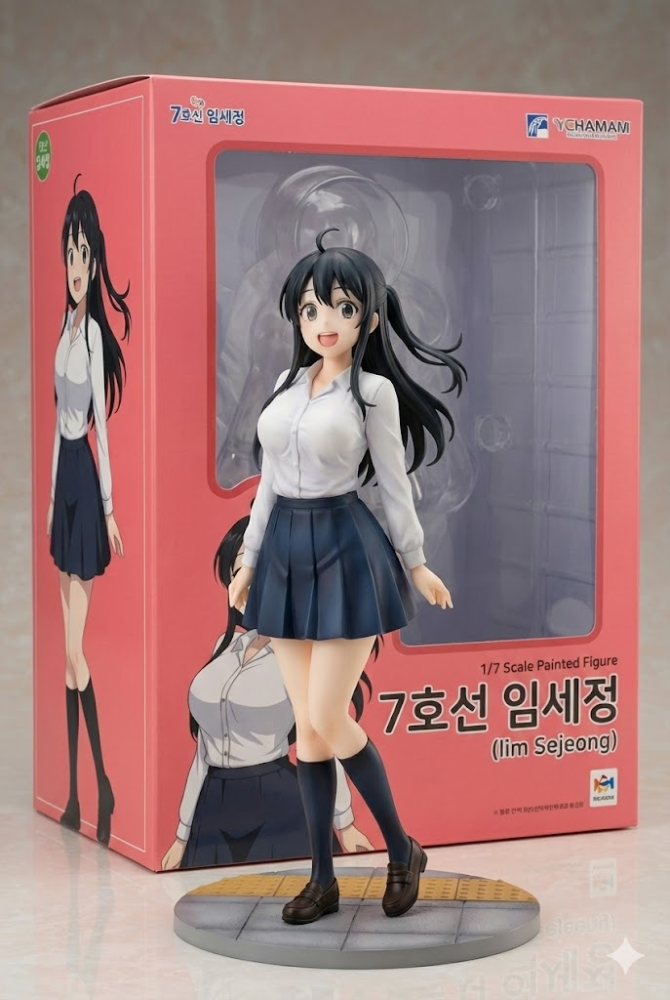
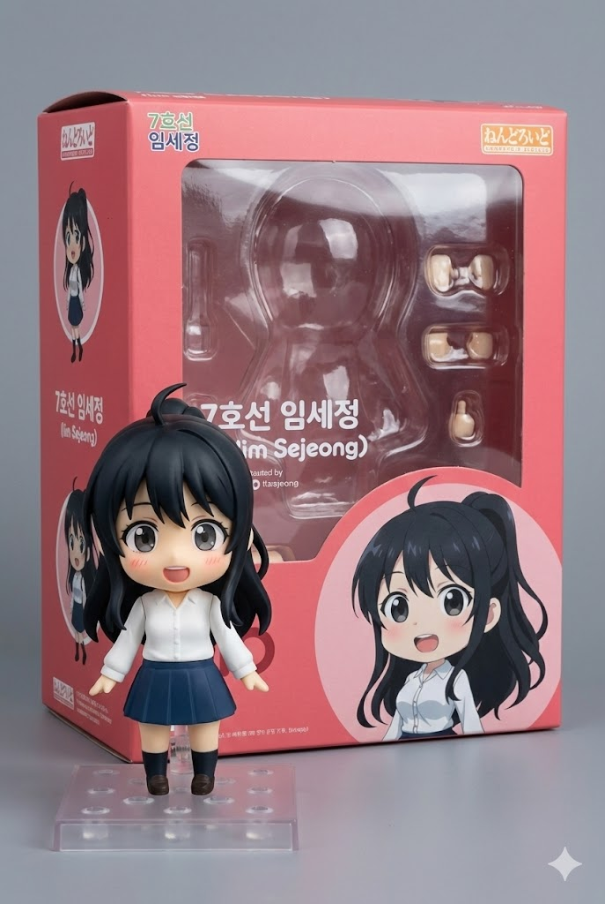
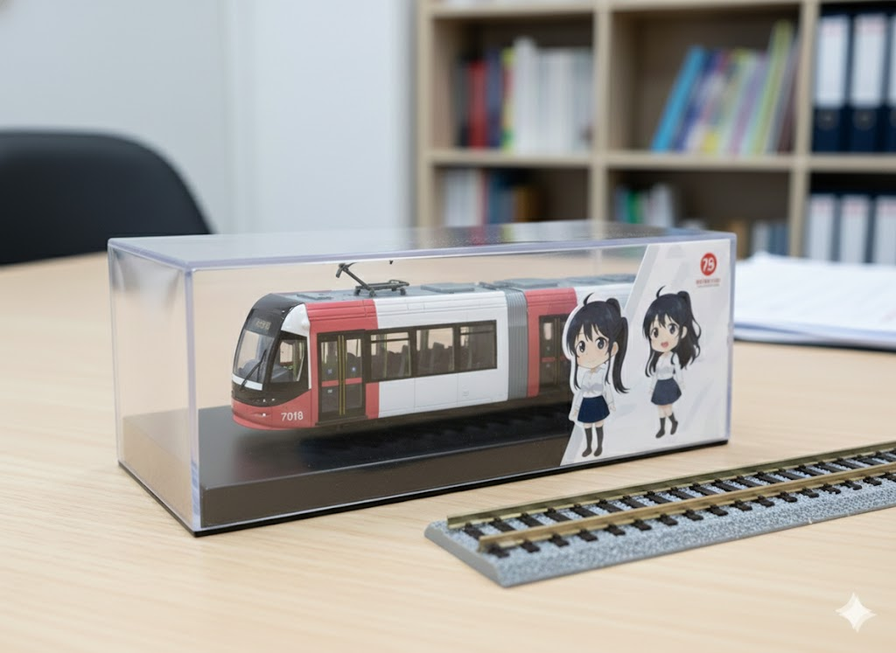

1. 개요
"이 전차는 내 청춘이자, 우리 가족의 밥줄이야. 함부로 없애라 마라 하지 마!"
효빈권 광역전철 7호선(노면전차/트램)을 상징하는 마스코트 캐릭터 중 언니. 회주공업이 운영하던 사철 시절부터 마스코트로 활약해온 근본 있는 캐릭터다. 직업은 역무원이며, 현재 대리 직급을 달고 있다.
7호선의 상징색인 분홍색 제복을 입고 있다. 2011년 7호선이 효빈교통공사로 인수 및 공영화되면서 동생 임세하와 함께 리뉴얼되었다. 윤대환 전 시장의 트램 폐지 시도에 맞서 싸우며 노선을 지켜낸 역사가 캐릭터 설정에 깊게 반영되어 있다.
2. 상세 설정
2.1. 성격 및 특징
"생존형 리더"이자 "억척스러운 K-장녀".
부모님이 일찍 은퇴하시고 10살 터울의 늦둥이 동생 임세하를 사실상 혼자 키우다시피 했다. 생활력이 매우 강하며, 위기 상황에서 물러서지 않고 정면 돌파하는 강인함을 지녔다.
트램 폐지 논란 당시, 노조와 함께 거리로 나가 서명 운동을 주도했던 전력이 있다. 이 때문에 사내에서는 그녀를 '투사'로 기억하는 사람들이 많다. 평소에는 털털하고 시원시원한 성격이지만, 동생 임세하에게만큼은 잔소리꾼 엄마 같은 모습을 보인다.
2.2. 학력 및 능력
효빈초-내조중-다판고를 졸업하고 효빈과학대학교(전문대) 철도운영과를 나왔다. 4년제 대학을 나온 다른 캐릭터들(고나미, 하루빈 등)에 비해 학벌은 낮지만, 현장에서 구른 짬밥(경력)과 실무 능력은 타의 추종을 불허한다.
회주공업 시절부터 근무했기에 구형 전차부터 신형 무가선 트램까지 모든 차량의 역사를 꿰뚫고 있다. 웬만한 차량 고장은 소리만 듣고도 어디가 문제인지 파악할 수 있을 정도다.
2.3. 정치 성향
對 윤대환: 적대적(생존의 위협).
윤대환 전 시장은 그녀에게 있어 '직장을 없애고 가족의 밥줄을 끊으려 했던 원수'다. 윤 시장이 "도로 교통 흐름을 방해하는 흉물 전차를 걷어내겠다"라고 했을 때, 가장 앞장서서 반대 시위를 했다.
對 박효빈: 신뢰 및 지지.
박효빈 시장은 트램을 없애는 대신 최신형 저상 트램으로 교체하고, '친환경 도심 교통 수단'으로 브랜드화하여 7호선을 부활시켰다. 임세정에게 박효빈은 단순한 시장이 아니라 '구원자'나 다름없다.
3. 인간 관계
-
임세하 (동생): 눈에 넣어도 안 아픈(하지만 말은 안 듣는) 동생. 공대생이 된 동생이 기계 덕질하느라 학점을 말아먹었을 때 등짝 스매싱을 날렸지만, 밤새 과제하는 동생을 위해 야식을 챙겨주는 츤데레 언니.
-
고나미 (1호선 기관사): 나이는 임세정이 4살 더 많지만, 직급 체계상 고나미(대리급 대우)와 비슷하거나 미묘하다. 하지만 고나미가 임세정의 경력을 존중하여 "언니"라고 부르며 따르기 때문에 사이가 좋다. 둘 다 사내 '고인물' 라인이다.
-
효빈대 카르텔 멤버들: 하루빈, 미소하 등 대졸 공채 출신 후배들과도 잘 지낸다. 특히 미소하와는 같은 05년생인 동생(세하) 이야기를 하며 학부모(?) 상담을 하곤 한다.
4. 관련 굿즈
주로 중앙로1가역점(7호선 로드샵)과 내항역점에서 구할 수 있다. 임자매 세트 상품이 인기가 많다.

[SEGA] 7호선 임세정 1/7 스케일 피규어
활기찬 출근길 Ver.
75,900원

넨도로이드 임세정
확성기 & 도시락 파츠
45,000원

임자매의 7호선 무가선 트램 다이캐스트
정교한 디테일
35,000원
5. 여담
-
요리 실력이 수준급이다. 동생 임세하의 도시락을 매일 챙겨주는데, 그 퀄리티가 높아 동기들 사이에서 부러움을 산다. 넨도로이드 굿즈에 도시락 파츠가 들어간 것도 이 때문이다.
-
과거 전차 폐지 반대 시위 때 확성기를 들고 연설하던 사진이 효빈시 역사박물관에 전시되어 있다. 본인은 부끄러워하지만 팬들에게는 '전설의 짤'로 통한다.
-
HAF 기간에는 7호선 트램이 애니메이션 래핑 열차로 운행되는데, 이때 특별 안내방송을 임세정(성우)이 직접 맡는다.